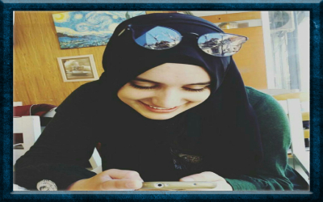

|
 |
Živimo u vremenu u kome je digitalna tehnologija postala sastavni deo života mladih širom sveta. Korišćenje interneta pruža brojne mogućnosti za psihosocijalni razvoj mmladih: od pronalaženja informacija, do sticanja veština digitalne, informacione i kritičke pismenosti neophodne za život u 21. veku.
Digitalne tehnologije i internet neizostavni su deo svakodnevice mladih koji su učestvovali u fokus-grupnim intervjuima. Gotovo svi učesnici u istraživanju poseduju „pametni” mobilni telefon sa pristupom internetu i koriste računar (uglavnom kod kuće). |
 |
|
Šta je mladima zabavno i korisno na internetu?
Učesnici u fokus-grupnim intervjuima internet uglavnom koriste u slobodno vreme, i to najčešće kao pasivni konzumeri informacija, a veoma retko kao aktivni kreatori sadržaja na internetu. Kako kažu mladi: „dok je za naše roditelje internet vau, za nas je to normalna stvar, ubija nam vreme dok smo u školi ili kod kuće, previše blejimo na internetu”. Najčešće aktivnosti mladih na internetu su: igranje igrica (izbor igrica zavisi od uzrasta i pola) i korišćenje sajtova za socijalno umre-žavanje (češće među starijom decom iz uzorka, desetogodišnjaci ug-lavnom nemaju profil na socijalnim mrežama). Najpopularnije so-cijalne mreže na internetu su Facebook, Instagram i Snapchat i ve-ćina učenika koristi nekoliko socijalnih mreža, što je trend koji je re-gistrovan i u nekim drugim sredinama (Lenhart, 2015). Internet mladi koriste i za: „skidanje” muzike, serija, filmova, prevođenje teksta sa stranog jezika, pronalaženje različitih sadržaja za školu itd. Posebno im znači to što koristeći Viber, WhatsApp, Skype mogu besplatno da komuniciraju i budu u kontaktu sa oso-bama koje su fizički udaljene. |
|
< |